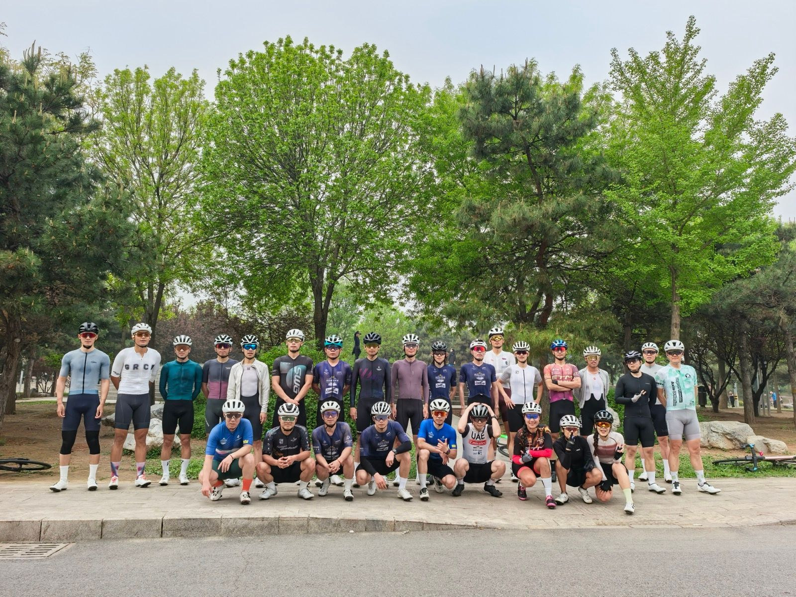
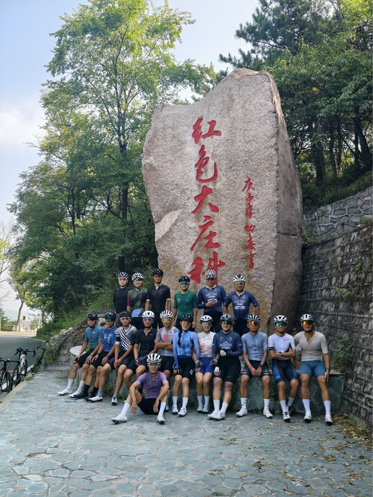
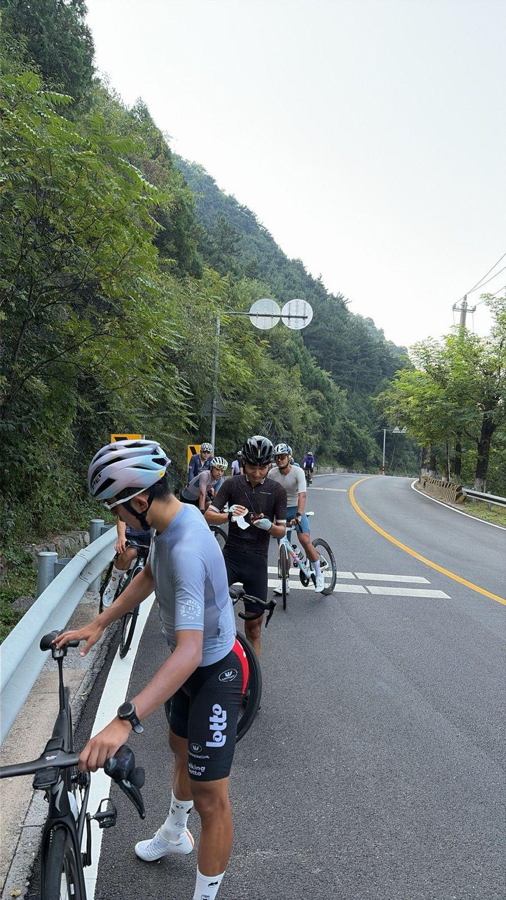

2026
A Year of Cycling · Strava
A Year of Cycling · Strava
111 次骑行 · 7,984 km · 累计爬升 64,299 m
年度数字
111 次骑行
7,984 公里
64,299 米累计爬升
246 小时在车上
4,503 次收藏（kudos）
231 个赛段 PR
175 km 最长单骑（戒潭秒阳 Ride）
8月
163 km · 爬升 2006 m · 均速 30.1 km/h · 5:24:28
天气不错适合多骑一会儿 🚵 长距离公路赛

1
9月
19 km · 爬升 844 m · 均速 23.5 km/h · 48:45
拉了拉了😂 🚵 爬坡骑行

2
8月
175 km · 爬升 2217 m · 均速 28.7 km/h · 6:05:27
😄 逐渐改善 🚵 长距离公路赛

3
5月
87 km · 爬升 888 m · 均速 32.0 km/h · 2:43:34
🚵 赛事 🔋 最大放电 93%

4
7月
175 km · 爬升 1713 m · 均速 32.3 km/h · 5:24:18
🚵 爬坡骑行 🔋 最大放电 79.6%

5
5月
81 km · 爬升 716 m · 均速 32.1 km/h · 2:32:03
🚵 赛事 🔋 最大放电 76%

6

7

8

9

10

11

12

13

14

15

16

17

18

19

20

21

22

23

24

25

26

27

28

29

30

31

32

33

34

35

36
Strava Photobook · 2026
由 Strava 骑行数据与照片自动编排。
数据来源：Strava 官方 API。照片为原图缩放，未改动源文件。